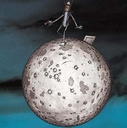

Forums galactiques > Assemblée Galactique : diplomatie officielle > Le lendemain...
| Piston Respect diplomatique : 5  03/11 ETU 18:21 | Score : 0 Détails Personne ne remet en cause la voie de la pensée tantrique que certains ont choisis.
Ce qui n'est pas légitime par contre, ce sont les petites manière dont vous usez pour la rendre légitime. Vous prônez la raison des sens, mais est-ce là raisonnable d'imposer ses idées, d'aliéner tout un peuple ? En agissant comme tel vous vous rendez responsable d'acte de barbarisme, et un jour où l'autre vous en payerez les frais devant l'assemblée ici présente. De nombreuses bouches vous maudissent mais vous restez sourds à leurs supplications. L'indifférence de vos victimes vous tuera à petit feu. | ||
| William Respect diplomatique : 772  03/11 ETU 18:24  | Score : 0 Détails Ah oui, vous avez raison, Commandant Piston, revenons au sujet principal.
Si vos sensations vous prouvent quelque chose, Commandant Angelus, je ne vois pas ce qu'elles viennent faire là, puisque vous disiez tout à l'heure qu'il fallait en faire abstraction pour pouvoir se raisonner. Ensuite, vous n'avez jamais donné d'argument montrant que la raison était en faveur de la légitimité de la suppression de la liberté de culte que les Red Tantras ont mis en oeuvre. | ||
| Tyrian Respect diplomatique : 1334  03/11 ETU 18:31 | Score : 1 Détails Cher poête disparu réapparu !
Je pense que vous devriez bien réflechir avant de perséverer dans cette voie. Etes-vous concient ce que c'est que de voir vos planètes envahies par d'immenses flottes de vaisseaux rouges ? Puis, alors que vos flottes sont détruites et que vôtre peuple crie pitié, de grands transporteurs lancent du haut du ciel d'innombrables pots de peinture rouge souillant à jamais vos terres sacrées, vous assistez impuissant au massacre des survivants par des hordes rouges et suisses. Et ne venez pas nous parler de.... liberté et autres horreurs de ce genre. Cela indispose et vous place dans le camp des indésirables... | ||
| Le Poète Disparu Respect diplomatique : 116  03/11 ETU 18:38 | Score : 3 Détails Le poète était conscient de la gravité de ses paroles, mais elles n'étaient en aucuns cas provocatrices, ni mêmes arrogantes.
Les relations que j'entretiens avec l'Empire sont amicales, et je compte qu'elles le restent. Néanmoins, il faut reconnaître de la force de caractère en ces Hommes, exceptionnels si il y en a, qui combattent pour eurs idéaux. Je serais un ami, mais pas un esclave. Un allié, mais pas un vassal. Un soutien, mais pas un serviteur. | ||
| William Respect diplomatique : 772 03/11 ETU 18:41 | Score : 2 Détails La question claire à laquelle il faut répondre, c'est : consentez-vous à devenir ou non citoyen de l'Empire des Sens ?
Oui : vous serez un de leurs sujets. Non : vous serez annexés (vous pourrez encore essayer de vous défendre, mais les chances de résister sont maigres). Dans tous les cas, vos planètes leur appartiendront, que ce soit directement ou indirectement par votre assujettissement. Maitenant, vous pouvez toujours essayer de rester neutre. Mais bon : c'est ce que j'ai essayé et je suis à présent Sans Planète, avec un petit croiseur léger qui se ballade. | ||
| Angelus L Oméga Respect diplomatique : 1305  03/11 ETU 19:34 | Score : 1 Détails Encore une fois, le sens premier du terme barbare n’est pas péjoratif, il signifie étranger, c’est ce sens que nous utilisons. Janus-Jana l’avait déjà expliqué. Il faut croire que certains n’écoutaient pas (volontairement ?).
Quand à Mablane, ce n’est pas parce que vous avez abandonné la Lumière, drapé dans votre ego moralisateur, que personne ne peut reprendre le flambeau de la Raison. Ce n’est pas parce que votre esprit est étroit que vous devez empêcher vos semblables de s’ouvrir à la philosophie tantrique, rayonnante d’Amour pour la galaxie. Car oui, on aime même les non-citoyens. Ils sont simplement ignorant, nous leur pardonnons. Mais ce n’est pas pour autant qu’il faut se complaire dans l’erreur. Haut les esprits ! Vous avez une philosophie à conquérir ! | ||
| William Respect diplomatique : 772 03/11 ETU 20:34 | Score : 0 Détails Je ne sais pas à quoi vous avez répondu dans votre première phrase. Un barbare est littéralement un étranger... oui, et alors ?
Ensuite, le Commandant Mablane n'empêche rien du tout, au contraire de vos flottes. Enfin, vous n'avez toujours pas le monopole de la raison, comme quiconque ici. Donc, ne venez pas dire que votre foi est la meilleure et que les autres peuvent aller se rhabiller (excusez-moi l'expression). En plus d'être de l'intolérance, c'est du prosélytisme à l'état pur. | ||
| Mablane Respect diplomatique : 1399  03/11 ETU 20:44 | Score : 2 Détails En plus, je signale que je n'empêche personne d'être adepte du tantrisme. C'est leur choix, comme j'ai choisi le
mien ! Contrairement à vous, JE n'impsoe pas ma vision des choses, mais, à l'inverse, JE ne veux pas que l'on m'impose des choses... C'est logique ! Et puis même si j'étais idiot, étroit d'esprit, buté dans mes opinions et tout le tralala, eh bien je l'accepterais, et j'inviterais les autres à élever leur âme plus haut que la mienne ! *Amen*. |
Forums galactiques > Assemblée Galactique : diplomatie officielle > Le lendemain...